Famous Indian Festivals
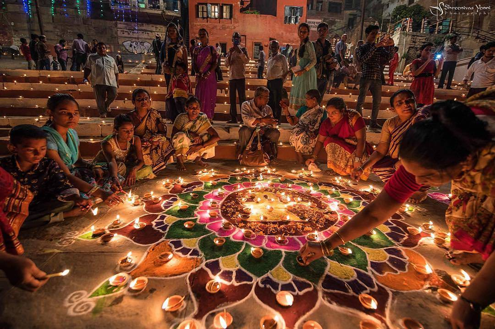
Diwali
Diwali is known as the Festival of Lights.
People decorate their homes with lamps
and celebrate with family.

Holi
Holi is known as the Festival of Colors.
People play with colors and enjoy
sweets with friends and family.
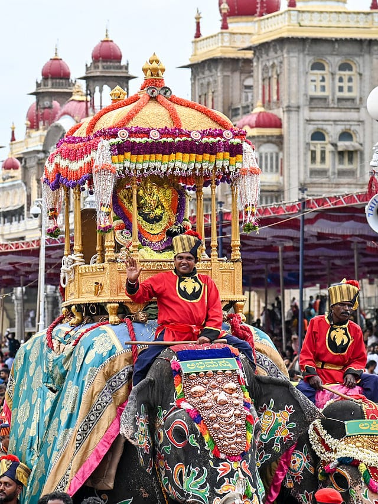
Dasara
Dasara is a famous festival celebrated
in India. It represents the victory
of good over evil.
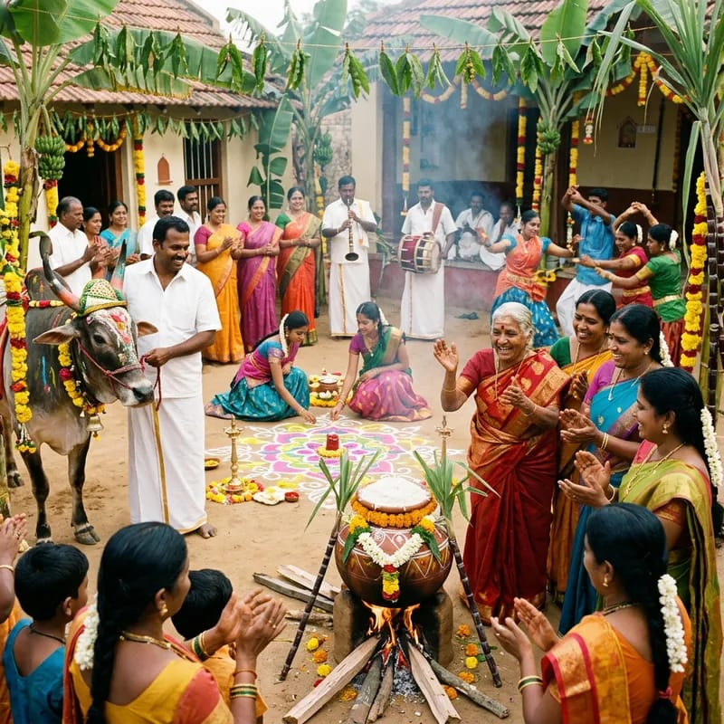
Pongal
Pongal is a harvest festival mainly celebrated in Tamil Nadu.
People prepare traditional Pongal dishes and decorate homes.
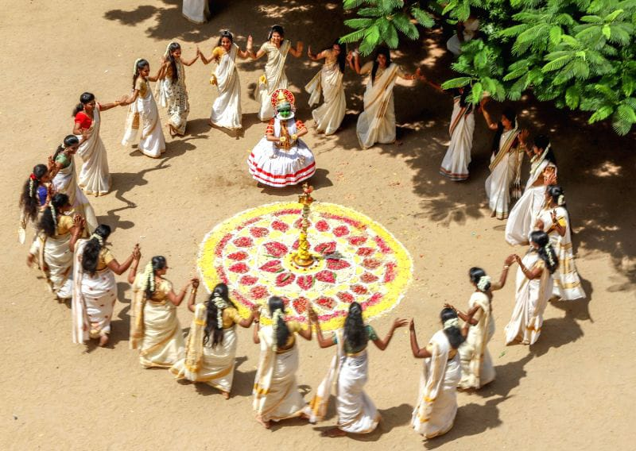
Onam
Onam is a famous harvest festival of Kerala.
It is celebrated with flower decorations, traditional food
and cultural activities.
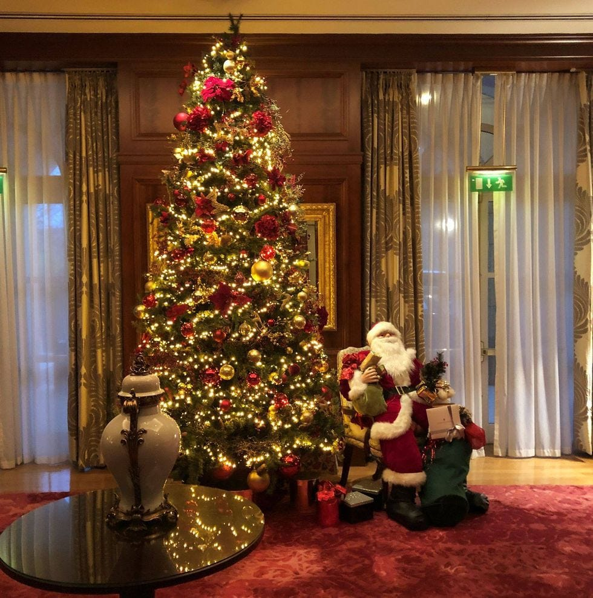
Christmas
Christmas celebrates the birth of Jesus Christ.
People decorate Christmas trees, exchange gifts and enjoy
time with family.

Janmashtami
Janmashtami celebrates the birth of Lord Krishna.
Devotees celebrate with prayers, songs and cultural programs.
It is celebrated with great joy across india.
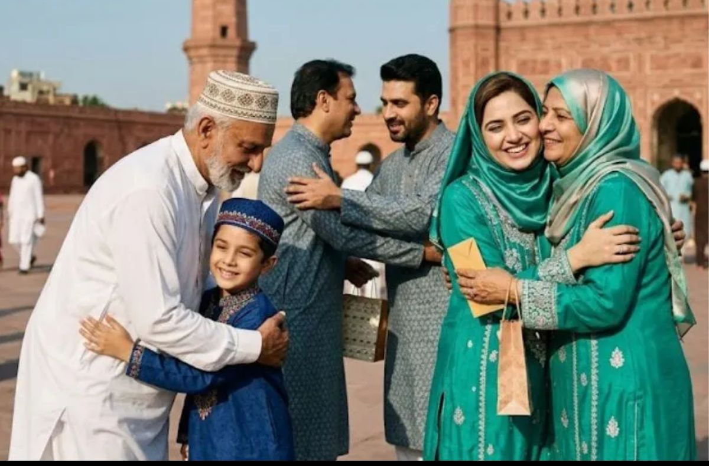
Eid
Eid is celebrated by Muslims with prayers, family gatherings,
traditional food and sharing happiness with others.
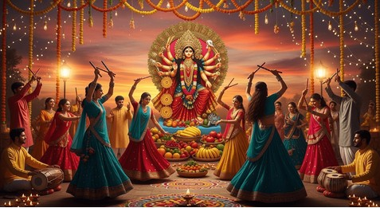
Navratri
Navratri is a nine-night festival dedicated to Goddess Durga.
Garba and Dandiya are popular celebrations.
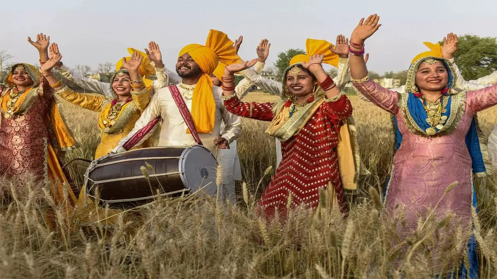
Baisakhi
Baisakhi is an important harvest festival of Punjab.
It is celebrated with traditional dances, music and food.
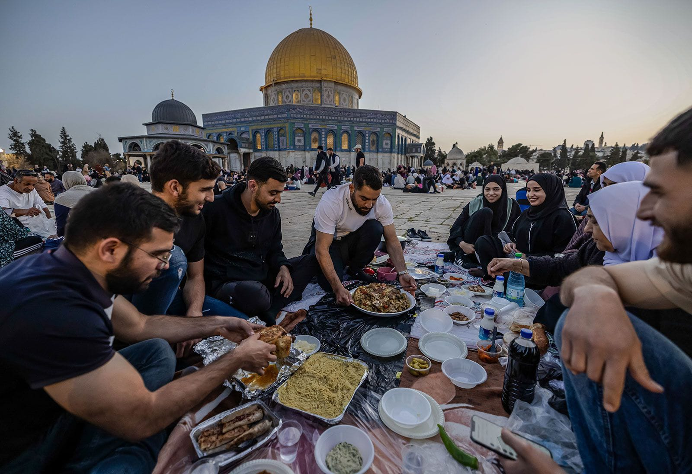
Ramadan
Ramadan is a holy month observed by Muslims around the world.
It is a time of fasting, prayer, charity and self-disciplane.

Good Friday
Good Friday is an important christian religious day that remebers the death of death of Jesus Christ.
It is observed on the Friday before Easter Sunday.
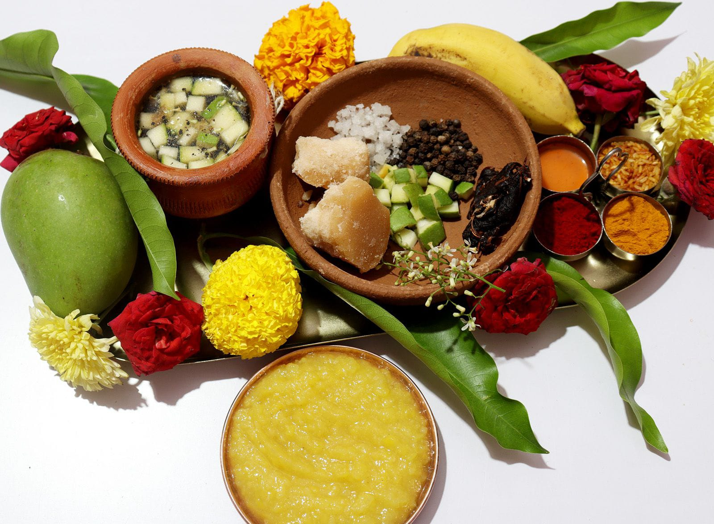
Ugadi
Ugadi is a traditional New Year festival celebrated in Karnataka.
People decorate their homes and celebrate with joy and prayers.
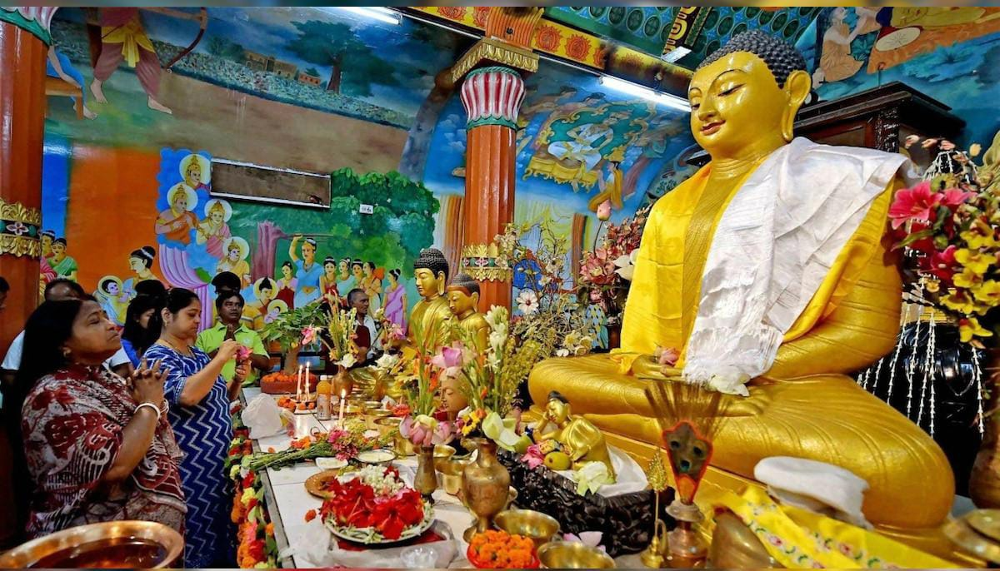
Buddha Purnima
Buddha Purnima is an important Buddhist festival celebrated in India.
It marks the birth of Gautama Buddha and teaches peace, kindness.